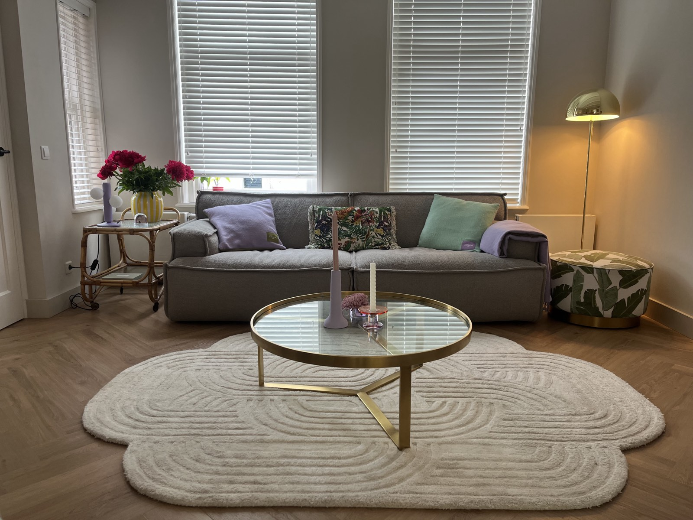

Welkom
Welkom in ons huis! Een plek waar wij zelf heel fijn wonen, en we hopen dat jullie hier ook net zo van kunnen genieten. Voel je thuis en geniet van de omgeving!
In deze handleiding vind je alle praktische zaken over ons huis. Daarnaast hebben we ook onze favoriete plekken en activiteiten in de buurt voor je opgeschreven, zodat je het meeste uit je verblijf kunt halen.
Kom je er ergens niet uit, bel of app ons gerust. We helpen jullie graag.
Veel plezier en geniet ervan!
Familie van Tuijl
Adres
Schuine Hondsbosschelaan 7, 1851 HN Heiloo
Gastheer
Théo van Tuijl
Telefoon
+31 (0)6 52636584
E-mail
theovantuijl@hotmail.com
Aankomst & sleutels
Bij aankomst loop je door de poortdeur aan de rechterkant van het huis. De sleutelkluis bevindt zich onder de veranda.
In de sleutelkluis vind je de sleutel van de achterdeur. Dit is de ingang die wij zelf altijd gebruiken. Dezelfde sleutel werkt ook voor de twee klapdeuren vanuit de woonkamer naar de tuin. Bij binnenkomst ligt er op tafel nog een tweede sleutel als reserve.
In de straat kun je gratis parkeren. Zijn alle plekken bezet, wat vooral 's avonds kan voorkomen? Dan parkeren wij zelf op de grote parkeerplaats aan het einde van de straat, rechts vóór het spoor. Daar vind je ook meerdere oplaadpunten voor elektrische auto's.
Check-in & check-out
De standaard check-in tijd is 15:00 uur. Wil je eerder inchecken? Stem dit dan even van tevoren met ons af, dan kijken we graag wat er mogelijk is.
De standaard check-out tijd is 11:00 uur. Wil je later uitchecken? Ook dan stemmen we dit graag van tevoren met je af.
Vertrek checklist — voor je vertrekt vragen we je om:
- Ramen te sluiten
- De verwarming op 18 graden te zetten
- Gebruikt beddengoed en handdoeken in de wasmachine te doen op 60 graden (met wasverzachter erbij) en de wasmachine aan te zetten — wij doen de rest
- De vaatwasser leeg te ruimen: bestek en servies weer netjes op zijn plek in de kasten
- De reservesleutel terug te leggen op tafel
- De fietssleutels terug te leggen op tafel
- De sleutel terug te hangen in de sleutelbox
- Het vuilnis te legen in de buitenbakken (zie Afval & recycling)
Laat gerust een review achter in het boekje — we zijn altijd benieuwd hoe je het verblijf bij ons hebt ervaren!
Wifi & elektronica
Wifi naam
This one's ours
Wifi wachtwoord
Number7!!!
TV (Samsung Frame) — het kastje van de tv staat in de kast rechts van de tv; richt de afstandsbediening daar naartoe. De afstandsbediening is eenvoudig en wijst zichzelf. Onderin het scherm zie je de iconen van Netflix, Disney+ en Ziggo. Netflix en Disney+ zijn vrij te gebruiken, voor live tv klik je op het Ziggo-icoon.
SONOS — in de woonkamer staan een SONOS speaker en subwoofer gekoppeld aan de tv. Daarnaast hangt er een losse SONOS speaker linksboven de paarse kast. Je kunt de speakers op twee manieren bedienen:
- Heb je een iPhone, iPad of Mac? Verbind je apparaat met onze wifi, open je muziekapp (Spotify, Apple Music of een andere app), tik op het AirPlay-icoon en kies de gewenste speaker. Geen app of account nodig.
- Heb je een Android telefoon? Download dan de gratis Sonos-app, verbind met onze wifi en je hebt direct toegang tot de speakers.
Het volume regel je via de app.
Keuken & apparatuur
Vaatwasser — wij gebruiken altijd de eco-stand, die standaard geselecteerd is en ongeveer 3,5 uur duurt. Wil je een sneller programma? Druk dan op de derde knop van links, je ziet de tijd direct aanpassen. Vaatwastabletten liggen in de bovenste schuiflade onder de wasbak.
Oven — heeft twee standen die wij het meest gebruiken. De stand op de positie van 15:00 uur is de heteluchtstand, handig voor gerechten die rustig en gelijkmatig moeten garen. De stand op de positie van 19:00 uur geeft direct bovenwarmte, handig om iets snel af te bakken zoals een pizza. Let op: dit gaat sneller dan je gewend bent, houd het goed in de gaten.
Kookplaat — gasfornuis met 5 pitten.
Koelkast & vriezer — in de keuken vind je links een koelkast voor dagelijks gebruik. Een tweede, grotere koelkast en vriezer staan in de schuur.
Nespresso — vul het waterreservoir aan de achterkant en zet het apparaat aan. Wacht tot de lampjes stoppen met knipperen. Klap de hendel omhoog, plaats een capsule en klap de hendel weer dicht. Zet een kopje eronder en druk op de kleine knop voor espresso of de grote knop voor lungo — het apparaat stopt automatisch. Gebruikte capsules vallen vanzelf in het opvangbakje. Bij aankomst liggen er capsules naast het apparaat; voel je vrij om zelf extra aan te schaffen als je meer nodig hebt. Wil je een cappuccino maken? Er is ook een melkschuimer aanwezig.
Overige apparaten — er is een waterkoker aanwezig, deze wijst zichzelf.
Waar vind je alles? In de ladekast rechts van de koelkast vind je pannen en deksels onderin, ontbijtbordjes/glazen/bekers/kinderservies in de tweede la, en bestek en koksmessen in de derde en vierde la. In de linker kast van het kookeiland liggen extra borden. In de paarse kast vind je wijn-, bier- en waterglazen, onderin de ovenschalen, rechtsonder de vaat-, thee- en keukendoeken, en in de la placemats en tafellakens. In de schuiflade onder de oven liggen de grote pandeksels, de keukenrasp en de maatbeker.
Wat mag je gebruiken? Alle kasten mogen worden geopend en alles wat je erin vindt mag je vrij gebruiken. We weten zelf hoe fijn het is om voor een vakantie niet alles opnieuw te hoeven inslaan. Is iets op of de laatste? We stellen het op prijs als je het vervangt.
Badkamer
Douche — heeft twee standen. Draai de linkerkraan omhoog voor de regendouche (het duurt even voordat het water warm is) of omlaag voor de handdouche. Met de rechterkraan stel je de watertemperatuur in. Er hangt een trekker in de douche om de wanden na het douchen droog te maken.
Bad — heeft twee kranen. Met de bovenste kraan zet je het water aan en kies je tussen de badkraan en de douchekop door hem naar links of rechts te draaien. Met de onderste kraan stel je de watertemperatuur in.
Handdoeken & extra's — extra handdoeken vind je in een mand in de badkamer: kleine en grote handdoeken, washandjes en strandhanddoeken. Speciaal voor kinderen is er Zwitsal body wash en shampoo, en badspeelgoed. Voor volwassenen is er een fijne body foam. Handwash en crème vind je zowel in de badkamer als in de keuken. Er is ook een föhn aanwezig in de la van de badkamer, met ruimte voor je eigen toiletspullen.
Extra toiletrolletjes liggen op de wc in de kastjes links en rechts boven het toilet — open deze met de zwarte handvatten. Voor de kleintjes hebben we in de schuur een brilverkleiner en een wc-opstapje. Vieze luiers mag je in een afgesloten zakje direct in de grijze bak aan de zijkant van het huis doen.
Verwarming & ventilatie
Thermostaat — hangt in de woonkamer, rechts van de schuifdeuren. De temperatuur lees je af op het display en stel je in met de pijltjestoetsen.
Ventilatoren — op elke slaapkamer staat een ventilator. Op de kinderkamers vind je er een met vier knoppen achterop voor aan/uit en de verschillende standen.
In de master bedroom staat een Duux Whisper 3. Deze bedien je via de knoppen op de voet of via de afstandsbediening op het nachtkastje. Hij heeft 26 snelheidsstanden (instelbaar via de draaiknop op de voet), een natuurlijke windstand die een buitenbries nabootst, en een timerfunctie tot 12 uur. De ventilator kan zowel horizontaal als verticaal draaien voor een optimale luchtverdeling.
Tuin & buiten
Planten — zie je dat een plant water nodig heeft, geef gerust water. Er staat een gieter in of naast de schuur. De bamboe rechtsachterin kan altijd wel wat water gebruiken. Geef je geen water? Ook geen probleem.
Buitenverlichting — de verlichting aan de zijkant van het huis, bij de voordeur en op de schuur werkt automatisch en schakelt vanzelf in en uit. De sfeerverlichting langs de tuin bedien je zelf: in de schuur, direct links bij de ingang, steek je de stekker in het stopcontact om de verlichting aan te doen en trek je hem eruit om hem uit te doen.
Tuinmeubilair — op de veranda vind je een volledige eethoek om ook buiten te eten, en een witte bank om in de avondzon te genieten, met kussens en dekentjes voor buiten. Bij slecht weer blijft alles droog, dus je hoeft niets af te halen. We vragen je de witte bank op zijn plek te laten staan; komt er een vlek op, behandel deze dan snel met de vlekkenmiddelen uit de keuken. Het overige tuinmeubilair mag je vrij verplaatsen en gebruiken. De tuin heeft ook een kinderhuisje met extra speelgoed.
Fietsen — alle fietsen zijn beschikbaar, de sleutels liggen op tafel bij binnenkomst. Er is een elektrische damesfiets met kinderzitje achterop: activeer hem met de knop rechtsboven op het bedieningspaneel en stel met de + en - knoppen het ondersteuningsniveau in. De actieradius is ongeveer 15–20 km, dus laad de batterij op voor vertrek (de oplader ligt rechts op het werkblad in de schuur — sluit hem het liefst een avond van tevoren aan, want hij laadt langzaam). Verder zijn er een gewone damesfiets, een herenfiets, een mountainbike voor kinderen van 7–12 jaar en een meisjesfiets voor kinderen van 5–7 jaar.
Praktisch & huishoudelijk
Meterkast — bevindt zich in de hal, rechts van de voordeur, in de witte kast. Is er een stop doorgeslagen? Dan staat de betreffende zwarte schakelaar naar beneden — klik hem omhoog om de groep te herstellen.
Schoonmaakspullen — staan in de keuken (middelste la, onderop): schoonmaakmiddel voor vloer, keuken en wc, en stoffer/blik. Gebruik vooral wat je nodig hebt. In de kelder vind je emmer en dweil.
Gereedschap — in de schuur vind je rechts een groot werkblad met lades. In de bovenste rechterlade ligt een set basisgereedschap.
Speelgoed & strandspullen — op de kinderslaapkamers, in het speelhuisje en in de schuur (duplo en knutselspullen) vind je genoeg speelgoed en boekjes. In de schuur ligt ook buitenspeelgoed en strandspullen: thermopakjes voor het zwemmen in zee (twee maten), een strandkleed, parasol en windscherm. Pak vooral wat je fijn en handig vindt!
Afval & recycling
In Heiloo scheiden we al het afval. In de grote beige prullenbak in de keuken zitten twee bakken: één voor grijs restafval en één voor plastic verpakkingen en blikken. Naast de prullenbak staat een kleinere bak voor groente- en fruitafval. Vuilniszakken liggen in de bovenste lade onder de wasbak.
Is een bak vol? Gooi hem dan leeg in de grote buitenbakken links van het huis: sta je voor het huis, loop dan naar links richting de ingang van de buren — de bakken staan daar rechts tegen ons huis. Elke bak heeft een gekleurd deksel:
- Grijs = restafval
- Oranje = plastic, verpakkingen en blikken
- Groen = groente en fruitafval
De bakken worden op vaste dagen aan de straat gezet voor lediging. Omdat dit per week verschilt, stemmen we dit voor je verblijf met je af. Papier leg je apart in de schuur, dat nemen wij mee als we terug zijn. Glas kun je kwijt in de glasbakken bij het winkelcentrum in de buurt.
Huisregels
Roken — is nergens in en om het huis toegestaan.
Huisdieren — zijn helaas niet toegestaan.
Overige regels — wees lief voor onze buren :)
Vervoer & omgeving
Parkeren — in de straat kun je gratis parkeren. Zijn alle plekken bezet, wat vooral 's avonds kan voorkomen? Dan parkeren wij zelf op de grote parkeerplaats aan het einde van de straat, rechts vóór het spoor, waar ook meerdere oplaadpunten voor elektrische auto's zijn.
Openbaar vervoer — NS Station Heiloo ligt op ongeveer 10 minuten lopen van het huis. Vanaf hier reis je in 30 minuten direct naar Amsterdam Centraal en in 5 minuten naar Alkmaar. Reistijden en tickets vind je op ns.nl; tickets zijn ook te koop bij de automaat op het station, rechts voor het perron.
Buurt tips
Bij binnenkomst vind je ook een blaadje met tips voor de omgeving. Hieronder alvast onze favorieten.
Boodschappen — wij gaan zelf altijd naar de Albert Heijn in winkelcentrum 't Loo, op 5 minuten loopafstand. In hetzelfde winkelcentrum vind je ook een fijne bakker, slager, kaaswinkel en viswinkel.
Restaurant Nieuw Westert — een aanrader, zeker voor gezinnen. Ligt prachtig in de duinen, met een groot terras en een leuke speeltuin voor de kinderen. Combineer het met een duinwandeling voor een mooie dag uit. Op de fiets ben je er in 20–25 minuten, en er is ruim parkeergelegenheid.
IJssalon Fiorentina — mag je tijdens je verblijf niet overslaan. Op een paar minuten lopen vind je een van de lekkerste ijssalons van Nederland. Er staat vaak een rijtje, maar dat schuift snel op en is meer dan de moeite waard.
Club Zand & Strand Deining (Castricum) — het strand van Castricum is een aanrader, met een grote parkeerplaats en fijn strand. Hier vind je ook twee van onze favoriete strandtenten: goed eten en een heerlijk terras.
Zwembad Baafje — een heel fijn buitenzwembad op fietsafstand, met twee kinderbaden en een groot sportbad met duikplanken, omringd door grasvelden en een speeltuin.
Klimduin Schoorl — in het natuurgebied van Schoorl kun je heerlijk wandelen en fietsen. Deze klimduin is bijzonder om te zien voor kinderen, en nog leuker om vanaf te rennen. Onderaan vind je verschillende restaurants met terrassen.
Kaboutertocht (4–6 jaar) — ga als een echte kabouter op pad in het Noordhollands Duinreservaat. Deze korte wandeling (2 km) voor kinderen van 4 tot 6 jaar start bij Bezoekerscentrum De Hoep. Rode bordjes met kaboutermutsjes wijzen de weg.

Noodcontacten
Théo van Tuijl
06 52636584
Alternatief contact — Deanie
06 83706810
Alarmnummer
112
Ziekenhuis
Noordwest Ziekenhuisgroep
Apotheek
Apotheek Heylo
Kom je er ergens niet uit? Bel of app ons gerust, we helpen je graag verder.